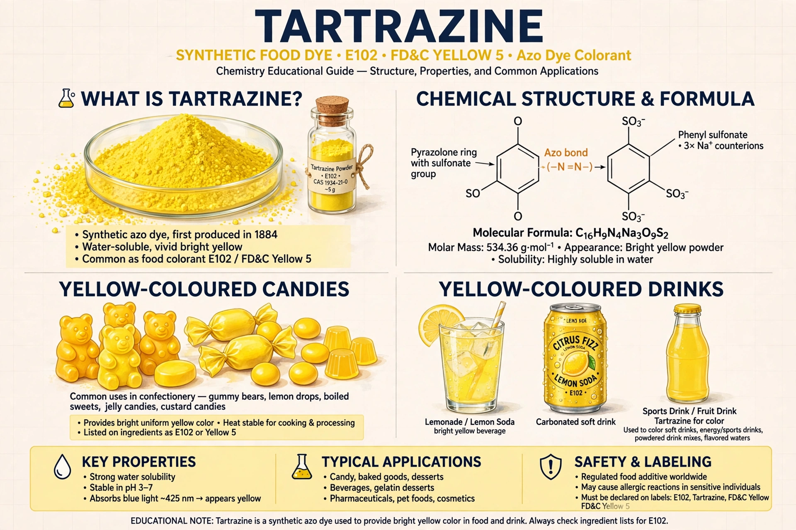

Tartrazine is a synthetic lemon-yellow azo dye primarily used as a food colouring. It is known as E number E102 in Europe and as FD&C Yellow 5 in the United States. It is found in soft drinks, confectionery, desserts, sauces and some medicines.

TartrazineTartrazine is a water-soluble powder, cheap and stable, which made it one of the most widely used yellow colourings in the world. It can be blended with blue dyes to produce shades of green.
A small proportion of people experience intolerance reactions such as urticaria. A 2007 Southampton study linked mixtures of colours including tartrazine with increased hyperactivity in some children, leading the EU to require warning labels on foods containing it, while regulators such as the FDA and EFSA have judged it safe at permitted levels for the general population. See also Monosodium glutamate for another debated food additive.